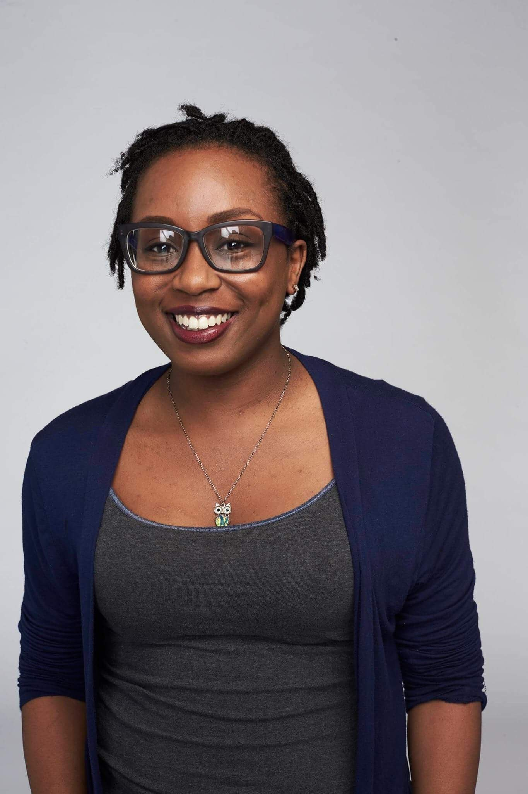

How It Started
I started college with no idea on what I wanted to do, I knew I was good at math and sciences, so I
thought I'd give computer science a try! It was quite challenging at first because I didn't have a great
support system. I was determined to use my CS background to help me become an excellent User Experience
Designer, but then I received an opportunity to become a Software Engineer Intern at CNN in the summer
of 2016. It changed everything for me. I transitioned into a full-time role at 2017 working on a SCRUM
team. Through the 5 years of being in the industry I was able to work on large web applications and many
Shopify websites.
Teaching Others
In college, I had the opportunity to teach children from K-5 how to use coding programs like Scratch and
MIT's App Inventor. In 2019 when I was in between jobs, I found another opportunity to teach, but for an
online full-stack bootcamp. I spend most Saturday mornings teaching others code fundamentals or
front-end frameworks like Bootstrap. I use my knowledge from the industry to aid my students as well as
strengthen my understanding of them. I always tell my students how I started as someone with strong
imposter syndrome and try my best to be available for mentoring and pep talks that I didn't have for
myself.
How It's Going
Since 2021, I have given birth to two girls, and I currently freelance different projects during the
week and teach on the weekends. My youngest is over 6 months old and my oldest is 2 years old. Even
though I am not working currently, I always have something to do!